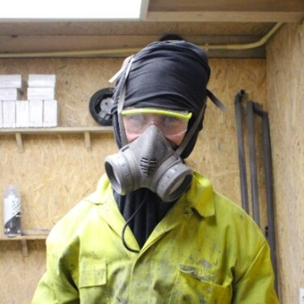

Creativity and development
Jeffrey Arts
About Jeffrey Arts
Jeffrey is developer and creative artist. He makes projects where he combines his interests in art with code and realized online and offline creative projects.
Summary of Jeffrey's lecture
Jeffrey talked about the way he makes a couple about his projects. He uses something called a toolbox where he created different types of tools to make certain pieces faster. He talked about how he created the site 'de waarde van perceptie.' And how he created something called a 'covid star'. Something notable is he creates his design with code and sometimes turns those design into something physical. Like the 700 pieces of art he made after he codes them online or the concrete art pieces he makes. At the end he said to always experiment around and either fail or succeed and always learn from them.
Conclusion: what I learned
It's possible to turn your online designs/code into something physical. Which is an interesting way of creativity that I had not seen before. Personally i'm not THAT creative to be able to that myself. So I will stick to just websites. The websites he made are very advanced and interactive. Which is fun to go through. I would love to add more interactivity to my own projects and explore the possibilities of that.